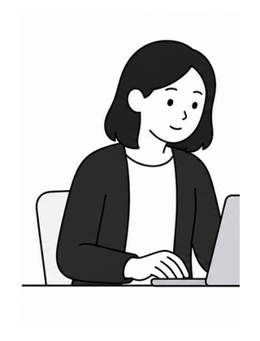
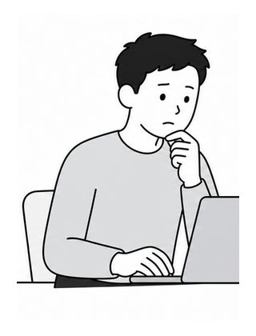
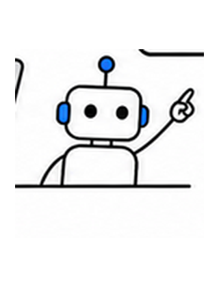
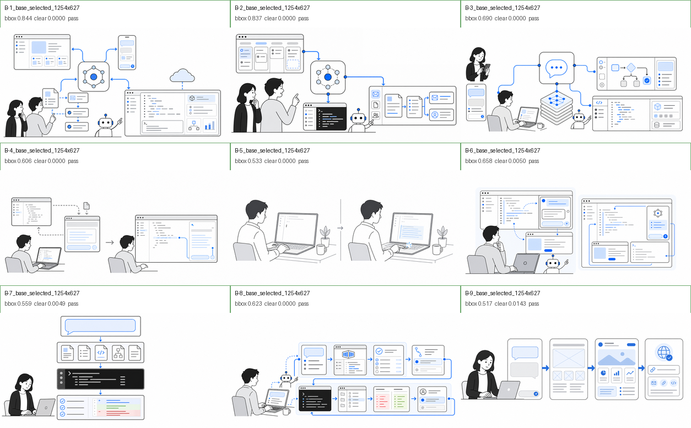
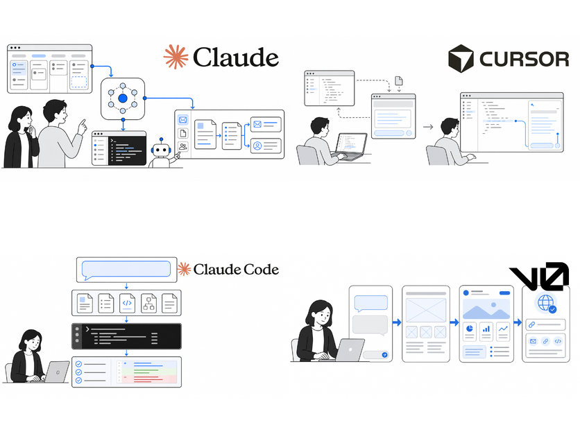
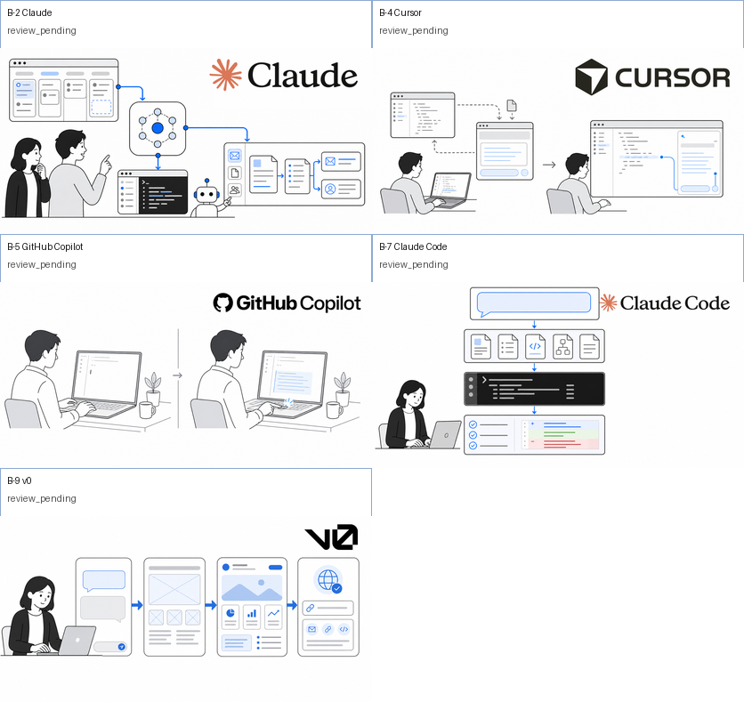

単なる余白足しや中央配置ではなく、横長の誌面として最初から構図を作ります。
VibeCodingDictionary / Ponchi Image Rules
ポンチ絵 2:1 画像生成ガイド
画像を作る前に見るための要約版です。2:1 の横長画像を、白黒グレーと青だけで統一し、ロゴは AI に描かせず公式素材を後合成します。
まず守る 3 つ
会社ロゴ、サービスロゴ、公式アイコン、ブランド色は AI 生成しません。使う場合は公式素材だけを後合成します。
ロゴ予定位置には人物、顔、手、矢印、重要ノードを置きません。後から貼っても絵が壊れない構図にします。
2:1 キャンバスの考え方
公式ロゴ用
clearspace
clearspace
入力
主役の概念
結果
- 右上にロゴ用の白い余白を確保する。標準は 500-520px 幅の lockup を置ける広さ。
- 余白は未完成な空白ではなく、紙面や壁面として自然に残す。
- 主図解は余白の外側で成立させる。ロゴが入っても情報を隠さない。
- ロゴ周辺に枠、カード、ラベル、影、装飾線を足さない。
- ただし余白を取りすぎない。右半分や上半分が空き地に見える場合は、主図解を大きく組み直す。
- 人物を出す場合、主要人物は画像高さの 35-60% 程度を目安にし、小さな飾りにしない。
余白と密度の判断
ちょうどよい
- 主図解、人物、フローがキャンバス幅の半分以上を使っている。
- ロゴ用 clearspace は白く静かだが、画面全体は完成した絵に見える。
- サムネイルでも主役の塊が 2-4 個に見える。
空きすぎ
- ロゴ予定地以外にも大きな白地が残り、未完成に見える。
- 主題が左下や中央だけに小さく寄っている。
- 小さいカードや細い線が多く、縮小すると意味が消える。
作業フロー
分類
ロゴ不要、公式ロゴ必要、素材確認待ちに分けます。
scene brief
誰が出るか、構図、ロゴ余白、避けるものを短く決めます。
2:1 ベース生成
ロゴなしで横長の完成構図を作ります。ロゴ予定位置は空けます。
公式素材確認
ブランドページ、press kit、公式リポジトリから素材と条件を記録します。
密度監査
ロゴ合成前に、主図解が小さすぎないか、右上以外が空きすぎていないかを確認します。
後合成
公式素材を変形、再着色、切り抜きせず、決まった座標に置きます。
監査
2:1、読みやすさ、偽ロゴなし、余白の自然さを確認します。
題材と絵の主役を分ける
タイトルやサービス名をそのまま絵にしません。まず subject stack を作り、何を大きく描くか、何を補助にするか、何をロゴ後合成に回すかを分けます。
用語、サービス名、モデル名、出来事そのもの。例: OpenAI、Claude 4 系、SWE-Bench。
読者が見て意味を取る構造や流れ。例: 中央ハブから機能カードへ伸びる図、3 本のモデルレーン、issue から test pass への流れ。
subject_stack:
entry_subject: OpenAI
visual_subject: neutral central AI company hub branching to capability cards
supporting_subjects: chat card, image card, video card, developer API card
logo_subject: official OpenAI wordmark overlay
excluded_subjects: OpenAI knot, ChatGPT logo, product UI, brand colors
人物とロボットのベース
毎回まったく違う人物にしないため、下の 3 つを固定キャラの元絵として使います。プロンプト文だけでなく、今の生成済みポンチ絵から切り出した PNG を視覚参照として扱います。

Character A / 女性キャラ
読者側、企画、レビュー、判断役。肩くらいの黒髪、白または薄グレーの服、落ち着いた表情。
assets/ponchi/references/character-a-reader-woman.png

Character B / 男性キャラ
開発、実装、確認役。短い黒髪、薄グレーの長袖、同じ線幅と頭身で安定させます。
assets/ponchi/references/character-b-teacher-man.png

Character C / ロボット
AI の働き、補助、提案を示す役。角丸頭、点の目、白または薄グレー、青は小さい発光点だけ。
assets/ponchi/references/character-c-pet-robot.png
毎回の生成では、必要なキャラだけを選びます。ただし出す場合は必ずこの 3 つの元絵を参照し、髪型、服、頭身、ロボット形状を大きく変えません。新しいマスコット、別人、動物風ロボットは作りません。
多人数の会議、レビュー列、チーム作業、利用者の群れなど、3 キャラだけでは人数が足りない場面では一時キャラを追加できます。一時キャラは背景または脇役に限定し、A/B/C より目立たせず、次の絵へ固定キャラとして持ち越しません。
見せ方の選び方
全部を Before/After にしません。用語が「変化」を説明するなら Before/After、手順を説明するなら操作フロー、関係性を説明するなら構造図を選びます。
Before / After
改善前と改善後の差が主題のとき。型チェック、補完、レビュー、安全性などに使います。
操作フロー
入力、実行、確認、修正の順番を見せたいとき。CLI、エージェント、テスト、差分確認に使います。
構造・関係図
複数要素の関係を見せたいとき。モデル、文脈、エコシステム、レイヤー構造に使います。
ロゴ余白優先
サービス名やモデル系列が主題のとき。右上 clearspace を残し、主図解は余白の外側で成立させます。
色ルール
基本は白い紙、黒い線、グレーの補助線、意味のある青だけです。黄色、緑、赤、紫、茶、オレンジ、虹色、ブランドカラーは使いません。
#FFFFFF
背景
背景
#F7F9FC
薄い面
薄い面
#1A1A1A
主線
主線
#6B7280
補助線
補助線
#EAF1FB
薄い選択
薄い選択
#D6E6FA
選択行
選択行
#8DB7E8
経路
経路
#3F7FD1
小アクセント
小アクセント
#123E82
強調
強調
採用と不採用
採用できる画像
- 2:1 の横長構図として最初から作られている。
- 右上 clearspace が静かで、ロゴを置いても情報を隠さない。
- 白黒グレーと指定青だけでシリーズ感がある。
- ロゴなしでも破綻せず、ロゴを入れると識別が完成する。
不採用にする画像
- 1:1 画像をただ横に広げただけ。
- ロゴ予定位置に人物、手、矢印、ノード、模様がある。
- AI がロゴ風、公式アイコン風、ブランド色を作っている。
- 広告バナー、実在 UI、読める文字、派手な色に見える。
scene brief の型
画像を作る前に、最低限これを埋めます。ここで構図とロゴ余白を決めてからプロンプト化します。
entry_id:
title:
subject_type: brand_or_service | model_family | tool_or_language | benchmark_or_eval | concept | history_or_event | front_matter
subject_stack:
entry_subject:
visual_subject:
supporting_subjects:
logo_subject:
excluded_subjects:
brand_asset:
mode: none | official_overlay_ready | official_overlay_required | blocked_brand_asset
asset_name:
local_path:
source_url:
visual_references:
character_a: assets/ponchi/references/character-a-reader-woman.png
character_b: assets/ponchi/references/character-b-teacher-man.png
character_c: assets/ponchi/references/character-c-pet-robot.png
role_balance:
composition_family:
composition_type:
composition_density: compact | balanced | spacious
view_mode: before_after | operation_flow | structure_map | logo_clearspace | diagram_only
characters:
- female
- male
- robot
character_base:
female: use | omit
male: use | omit
robot: use | omit
temporary_people:
allowed: yes | no
count:
role: background_team | crowd | reviewers | users
rule: keep temporary people secondary; do not replace Character A/B/C
hands_policy:
visible_hands_max:
gesture:
scene_goal:
main_symbols:
clearspace:
main_subject_scale:
avoid:
ロゴの状態分類
| 状態 | 意味 | 次の作業 |
|---|---|---|
| logo_avoid | ロゴ不要。概念図として説明する。 | 汎用アイコンと図解だけで 2:1 生成へ進む。 |
| source_review | 公式ガイドはあるが、具体ロゴや許諾条件の確認が必要。 | 公式ページを確認し、使う素材を決めるまで合成しない。 |
| needs_import | 公式ソースは確認済み。ローカル素材化がまだ。 | 公式素材を取得し、出典、日付、ローカルパスを記録する。 |
| applied | 公式素材を後合成済み。 | 2:1、視認性、公式素材の未改変、余白の自然さ、主図解の密度を監査する。 |
プロンプトに必ず入れる要点
Color palette: strict white/black/gray plus the approved blue palette only.
Do not use yellow, green, red, purple, brown, orange, rainbow colors, decorative blue sparkles, blue background fills, or brand colors.
Logo rule: do not generate, imitate, redraw, or approximate any company or service logo.
Reserve a clean white clearspace area for a later official logo overlay as an intentional part of the 2:1 page composition.
Do not place characters, faces, hands, important nodes, arrows, diagrams, text, icons, patterns, or decorative marks under the future logo area.
Style: clean simple editorial line illustration, not pencil sketch.
Use smooth uniform black lines, flat light gray fills, minimal shading, no hatching, no scratchy hand-drawn texture.
B章ブランド回の観察パイプライン
A章は後回しにし、B-1〜B-9 は先にベース画像を作り直して、密度と右上ロゴ余白の両方を数値監査する。公式素材が未確定のものは final に進めず、ベース候補として止める。
| 項目 | 現在の扱い | 次の作業 |
|---|---|---|
| B-1 Gemini | base pass 公式ロゴ待ち | Gemini公式素材と利用条件を確認してから後合成。 |
| B-2 Claude | overlay candidate 公式ロゴ合成済み | Anthropic press kit 由来の公式 Claude ロゴ候補を目視確認。 |
| B-3 ChatGPT | base pass ロゴ選定待ち | ChatGPT固有ロゴかOpenAI wordmarkかを決めてから後合成。 |
| B-4 Cursor | overlay candidate 公式ロゴ合成済み | Cursor公式 horizontal lockup 候補を目視確認。 |
| B-5 GitHub Copilot | overlay exists 公式ロゴ合成済み | 公式Copilot lockupの視認性と広告バナー化していないかを目視監査。 |
| B-6 Windsurf | base pass 素材確認まで保留 | 公式素材と条件が確認できるまで後合成しない。 |
| B-7 Claude Code | overlay candidate 公式ロゴ合成済み | Anthropic press kit 由来の公式 Claude Code ロゴ候補を目視確認。 |
| B-8 Codex | base pass ロゴ選定待ち | Codex固有lockupがあるか、OpenAI wordmarkで扱うか確認。 |
| B-9 v0 | final candidate 公式ロゴ合成済み | Vercel公式 v0 ロゴを180px配置に調整し、final候補として目視確認。 |



C:\Users\tgch1\.cache\codex-runtimes\codex-primary-runtime\dependencies\python\python.exe `
scripts\ponchi_image_audit.py `
assets\ponchi\experiments\batches\ponchi-batch-001-b-focus\selected\*base_selected_1254x627.png `
--out-csv ledgers\ponchi_b_focus_selected_base_audit.csv `
--out-md docs\ponchi_batch_audits\ponchi-batch-001-b-focus-selected-base.md `
--contact-sheet assets\ponchi\experiments\batches\ponchi-batch-001-b-focus\selected_base_contact_sheet.png